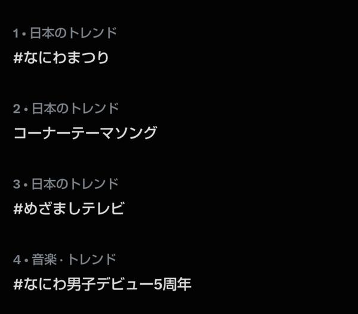
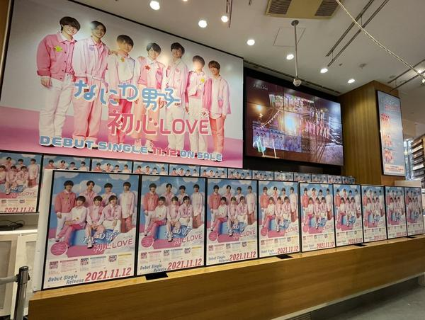

🇯🇵 日本の主要ニュース
🌍 世界の主要ニュース
🤖 AIニュース
💻 PC・ガジェットニュース
ドコモの5G SA通信障害、一部除き復旧も完全解消せずNTTドコモは11日に全国で起きた5G SA契約者向けの通信障害について、一部を除き復旧したと発表しました。夕方時点で完全復旧には至らず、原因を調べています。不正アクセスやサイバー攻撃は確認されていないとしています。
出典：ITmedia NEWS
🔥 Xのトレンド（日本）
ジャンルで絞らず上位20件を掲載。「未確認」はX上の投稿だけを根拠にしたもので、報道機関による裏付けはありません。
なにわ男子のCDデビュー5周年（11月12日）に合わせた「めざましテレビ」の特集企画のハッシュタグです。メンバーのじゃんけんや大橋和也さんのY字バランス、メドレーなどの感想が多数投稿されています。
⚠ 未確認（X情報のみ）
めざましテレビの「なにわ男子のそれええやん！」が150ええやんを達成したご褒美として、コーナーのテーマソング制作が発表されました。ファンが「新曲」と喜んでいます。
⚠ 未確認（X情報のみ）

フジテレビの朝の情報番組。この朝はなにわ男子の5周年企画「なにわまつり」で盛り上がり、トレンド上位4つをなにわ男子関連が占めたという投稿も見られます。
⚠ 未確認（X情報のみ）

2021年11月12日のCDデビューから5年。デビュー当日の思い出の写真や、「これからもずっと」と祝うメッセージが集まっています。
⚠ 未確認（X情報のみ）
めざましテレビのディズニー関連プレゼント企画のハッシュタグです。スティッチのグッズをめぐるクイズに「C：キュートでふわふわ」などと答える応募投稿が大量に流れています。
⚠ 未確認（X情報のみ）
ガストとMrs. GREEN APPLEの藤澤涼架さんのコラボ第2弾が11月12日10時30分から始まります。お皿（全4種）などのグッズや、抽選キャンペーンへの応募投稿が相次いでいます。
出典：ガスト公式Xの告知
11月12日は、1872年に礼服を洋服とする太政官布告が出たことにちなむ「洋服記念日」。お気に入りの服やイラストを紹介する投稿が並んでいます。
⚠ 未確認（X情報のみ）
めざましテレビのなにわまつりで流れた過去の企画「噴水ボーイズ」の映像に、「懐かしい」という声が殺到しています。
⚠ 未確認（X情報のみ）
「いい（11）ひふ（12）」の語呂合わせで日本臨床皮膚科医会が1989年に定めた記念日。乾燥する季節に向けて保湿やスキンケアを呼びかける投稿が目立ちます。
⚠ 未確認（X情報のみ）
木曜日の朝の定番あいさつトレンドです。「もくもくもくようび」などのあいさつとともに、イラストやゲームのスクリーンショットが投稿されています。
⚠ 未確認（X情報のみ）
なにわ男子のデビュー日（11月12日）を祝う声に加え、FNS歌謡祭でKEY TO LIT（キテレツ）がCDデビュー当日に初出演すると発表されたことも喜ばれています。
出典：オリコンニュース
なにわ男子を長年取り上げてきためざましテレビへのファンの感謝の言葉です。なにわ男子の7:28に合わせた演出などに「ありがとう」の投稿が並んでいます。
⚠ 未確認（X情報のみ）
なにわ男子の道枝駿佑さんと大西流星さんのコンビの愛称です。めざましテレビで2人の「こそキュン」場面が流れ、「唐突なみちょりゅちぇ」と話題になりました。
⚠ 未確認（X情報のみ）
FNS歌謡祭の第2弾出演者が発表され、Mrs. GREEN APPLEが12月2日の第1夜で、映画『君の話』の主題歌「本と彗星」をテレビ初披露することが決まりました。
出典：オリコンニュース
なにわ男子の大橋和也さん。めざましテレビで井上アナの後ろに映り込みかけて慌てる姿などが「かわいい」と話題です。
⚠ 未確認（X情報のみ）
前日の「ワンワンワンワン（11/11）」に続き、デビュー日の11月12日をなにわ男子のファンが「ワンワンワンニャン」と呼んでいます。公式が7時28分に関連する投稿をしたという声があります。
⚠ 未確認（X情報のみ）
この夏のミュージカルのアリーナツアー「帝コン」のメンバー（堂本光一さん、井上芳雄さんら）が、FNS歌謡祭第1夜に再集結して「This is Me」を披露することが発表されました。
出典：オリコンニュース
ホロライブの白銀ノエルさんの朝のあいさつ「おはまっする」への返信が大量に集まり、トレンド入りしています。
⚠ 未確認（X情報のみ）
アカウント @LVT_sng が「にこさん（ウサギ）の毛玉ボールを作る」と朝に投稿し、ファンの「おはしょう」返信とともに広がっています。
⚠ 未確認（X情報のみ）
スマホゲーム「モンスト」のアップデートで追加されたナビ機能です。「邪魔」「すぐ非表示にした」という不満と、設定でオフにする方法を共有する投稿が相次いでいます。
⚠ 未確認（X情報のみ）
Grok Bot がまとめました。